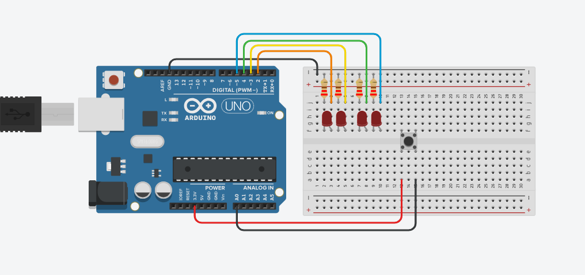

Start with
the basics.
Learn how Arduino works, understand electronic circuits, experiment with sensors, and write your first program. Five lessons designed to take you from curious beginner to confident maker.
Learn it.
Then build it.
Open any lesson to explore the material. Mark lessons complete as you progress.
01 Arduino Introduction Understand the Arduino Uno, its pins, and what you can build.
What is an Arduino?
An Arduino Uno is a microcontroller development board. It's a small programmable computer that can receive information, process it, and control electronic components.
These introductory lessons are based on the Elegoo Uno R3 Basic Starter Kit.
Board anatomy
Your Arduino Uno has several groups of pins. Each group has a different purpose.
- Digital pins (0–13): used for digital inputs and outputs.
- Analog inputs (A0–A5): used to read changing analog signals.
- 5V and 3.3V: provide regulated voltage for suitable components.
- GND: the electrical ground connection.
- RESET: restarts the program on the Arduino.
- USB port: connects the board to your computer for programming and power.
Digital vs. analog
Digital signals represent two logical states: HIGH and LOW. A push button is an example of an input with two states.
Analog inputs measure signals across a range. For example, a photoresistor can help the Arduino measure changing light levels.
What can you do with Arduino?
- Build robots that react to their surroundings.
- Control LEDs, motors, and other devices.
- Measure temperature, humidity, and light.
- Connect programming with physical electronics.
02 Getting to Know Your Arduino Learn circuits, breadboards, schematics, and LEDs.
Basic electronics
Every circuit needs three things: a power source, electrical connections, and components that do something useful.
- Power: Arduino, USB, or a suitable battery supply.
- Connections: jumper wires and breadboards.
- Components: LEDs, buttons, resistors, and sensors.
Reading circuit schematics
A schematic uses electrical symbols and lines to show how components connect.
A circuit diagram is usually more visual. It shows components and wires in a layout closer to what you'll build on a breadboard.
Photographs can help you compare your finished circuit with a working example, but diagrams are often easier to follow during assembly.
Project 1 — Build a simple LED circuit
You'll need:
- Arduino Uno R3
- 3 jumper wires
- 1 breadboard
- 1 push button
- 1 LED
- 1 resistor (220 Ω)
What should happen?
After correctly wiring and powering the circuit, the LED should light when you press the button.
This demonstrates how a basic electrical circuit can respond to a physical action without any custom Arduino program.
03 Stimulus & Response Discover how sensors help robots react to the world.
Robotic sensing
Robots need to recognize changes in their surroundings. These changes are called stimuli. Sensors let a robot detect them.
Examples of things sensors can detect include:
- Temperature and humidity
- Light and infrared radiation
- Sound and ultrasound
- Movement and acceleration
- Touch and pressure
- Orientation and tilt
Input → Processing → Output
A robot can receive information from a sensor, interpret that information, and produce a response.
Robotic reactions
Robots can respond in different ways. Motors create movement, speakers produce sound, and LEDs or screens display information.
Experiment 1 — Photoresistor
A photoresistor changes resistance depending on how much light reaches it.
In the original lesson, a photoresistor changes the brightness of an LED. Try moving your hand over the sensor and observe what happens.
Experiment 2 — Tilt switch
A ball tilt switch contains a conductive ball that moves when the switch changes orientation.
When the ball closes the internal connection, current can flow and the LED responds.
04 Programming Your Arduino Install Arduino IDE and control four LEDs with one button.
Why program an Arduino?
In the earlier lessons, the Arduino mainly supplied power. Programming lets it read inputs, process information, and control outputs.
Set up Arduino IDE
- Visit Arduino's official software page .
- Download an IDE version compatible with your computer and board.
- Install the software.
- Connect your Arduino Uno with a suitable USB cable.
- Select the correct board and serial port in the IDE.
Project — Light Switcher
This project uses one button to control four LEDs. Each time you press and release the button, the active LED moves to the next position.
Circuit diagram
Follow this reference to connect four LEDs, their resistors, and a push button to the Arduino Uno.

Complete LightSwitcher program
This is the code from your uploaded
LightSwitcher.ino file.
Copy it into Arduino IDE and save it as
LightSwitcher.ino.
#define LED1 2
#define LED2 3
#define LED3 4
#define LED4 5
#define P1In A0
int n = 0;
int benchmark = 690;
bool wasPressed = false;
void setup() {
// put your setup code here, to run once:
pinMode(LED1, OUTPUT);
pinMode(LED2, OUTPUT);
pinMode(LED3, OUTPUT);
pinMode(LED4, OUTPUT);
pinMode(P1In, INPUT);
digitalWrite(LED1, HIGH);
digitalWrite(LED2, LOW);
digitalWrite(LED3, LOW);
digitalWrite(LED4, LOW);
}
void loop() {
// put your main code here, to run repeatedly:
if (analogRead(P1In) <= benchmark && wasPressed) {
n = n + 1;
if (n == 4) {
n = 0;
}
}
if (n == 0) {
digitalWrite(LED1, HIGH);
digitalWrite(LED4, LOW);
}
else if (n == 1) {
digitalWrite(LED1, LOW);
digitalWrite(LED2, HIGH);
}
else if (n == 2) {
digitalWrite(LED2, LOW);
digitalWrite(LED3, HIGH);
}
else {
digitalWrite(LED3, LOW);
digitalWrite(LED4, HIGH);
}
wasPressed = analogRead(P1In) >= benchmark;
delay(200);
}Understanding the code
- #define: assigns names to the Arduino pin numbers.
- setup(): configures pins when the board starts.
- loop(): runs repeatedly while the board is powered.
- analogRead(P1In): reads the button input on A0.
- benchmark: sets the threshold used to interpret the button reading.
- wasPressed: remembers the previous button state.
- n: tracks which LED should be active.
- digitalWrite(): turns the selected LED on or off.
- delay(200): pauses for 200 milliseconds before the next loop.
How button release detection works
The program checks both the current reading and whether the button was previously pressed. This lets it respond to a button release rather than repeatedly changing LEDs while the button remains held.
| Button phase | Current state | Previous state |
|---|---|---|
| Not pressed | OFF | OFF |
| Just pressed | ON | OFF |
| Held down | ON | ON |
| Released | OFF | ON |
Upload and test
- Build the circuit shown in the reference diagram.
- Open the LightSwitcher sketch in Arduino IDE.
- Connect your Arduino Uno.
- Select the correct board and port.
- Click Upload.
- Press and release the button to cycle through the LEDs.
05 Logic Gates Learn AND, OR, NOT, XOR, NAND, and NOR.
What are logic gates?
Logic gates work with binary values: TRUE and FALSE. They are fundamental to digital computing and can help programs make decisions.
The six logic gates
- NOT: reverses the input.
- AND: TRUE only when both inputs are TRUE.
- OR: TRUE when at least one input is TRUE.
- XOR: TRUE when exactly one input is TRUE.
- NAND: opposite of AND.
- NOR: opposite of OR.
Truth table
| A | B | AND | OR | XOR | NAND | NOR |
|---|---|---|---|---|---|---|
| 0 | 0 | 0 | 0 | 0 | 1 | 1 |
| 0 | 1 | 0 | 1 | 1 | 1 | 0 |
| 1 | 0 | 0 | 1 | 1 | 1 | 0 |
| 1 | 1 | 1 | 1 | 0 | 0 | 0 |
Try the interactive logic lab
Choose a logic gate and change its inputs. The output will update immediately.
Logic Gate Simulator
Logic gates in programming
Imagine a robot should move only when its power is on AND the path ahead is clear.
if (powerOn && pathClear) {
moveForward();
}The AND operator means both conditions must be TRUE before the action happens.
Remembering a state
The original lesson also explores how a value can stay TRUE once an event has occurred.
Q = false;
repeat forever:
P = readInput()
Q = P OR QOnce P becomes TRUE, Q stays TRUE, even if P later becomes FALSE. This demonstrates a basic way to preserve information using logical operations.
No matching lessons. Try another search.
Ready to build something?
Put your new Arduino knowledge into practice with a hands-on robotics project.
Explore Projects ↗